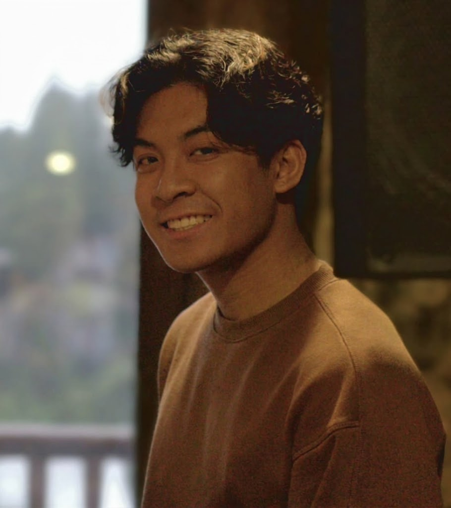
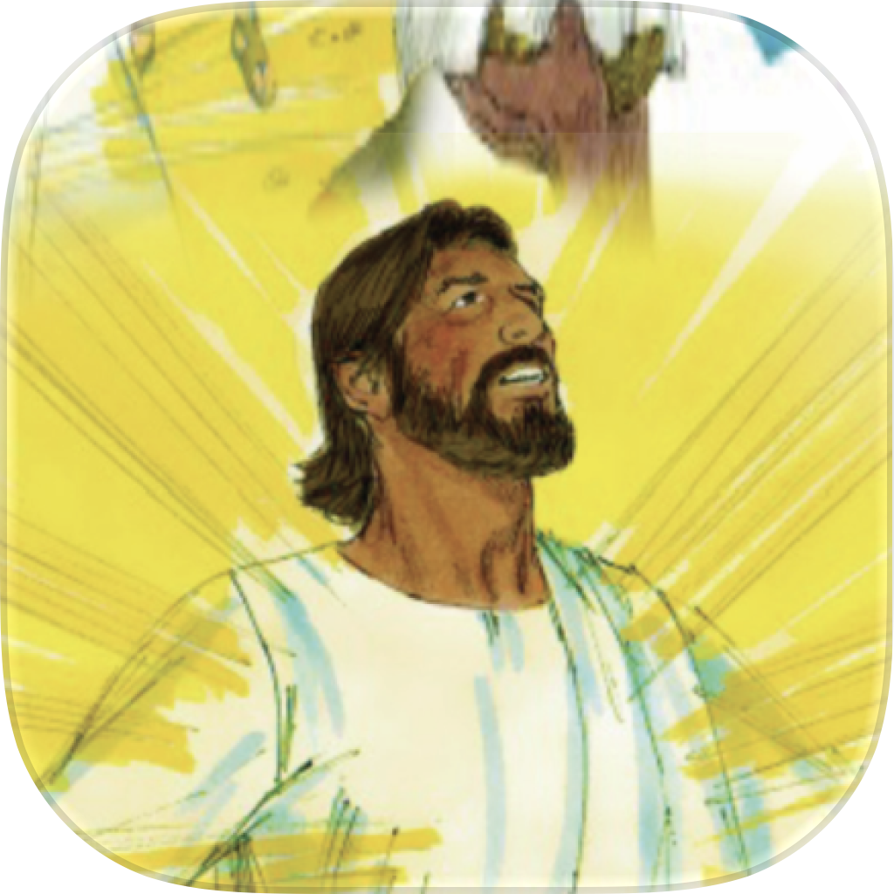
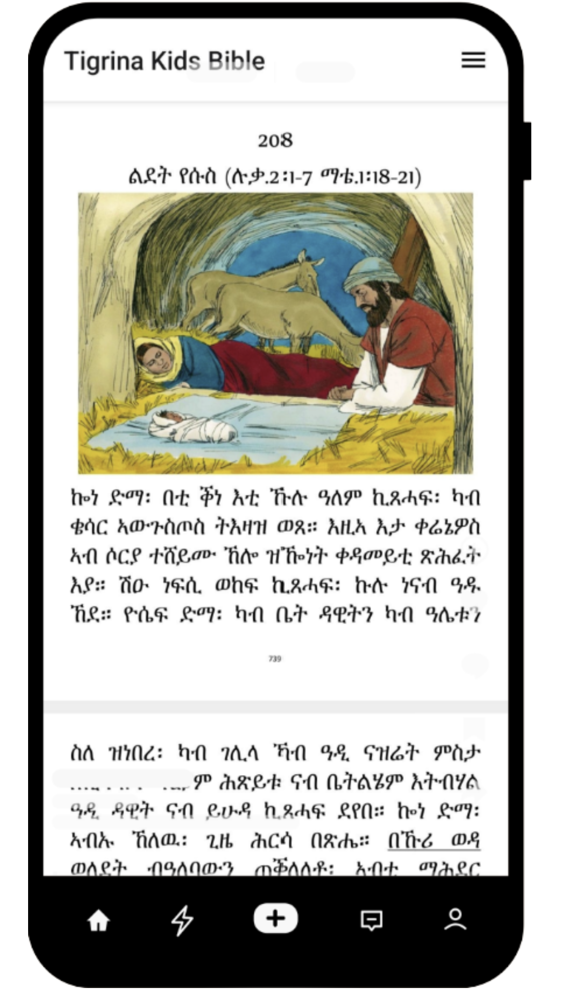
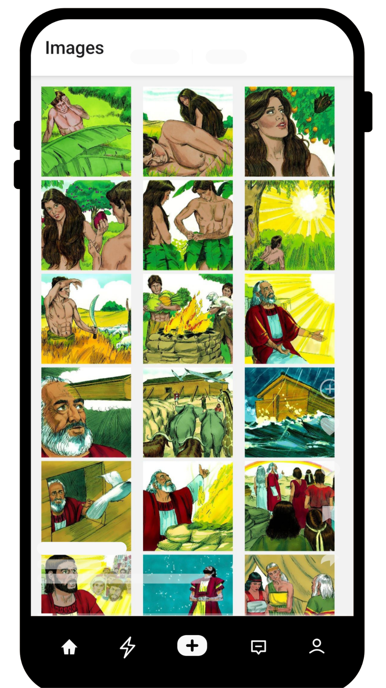
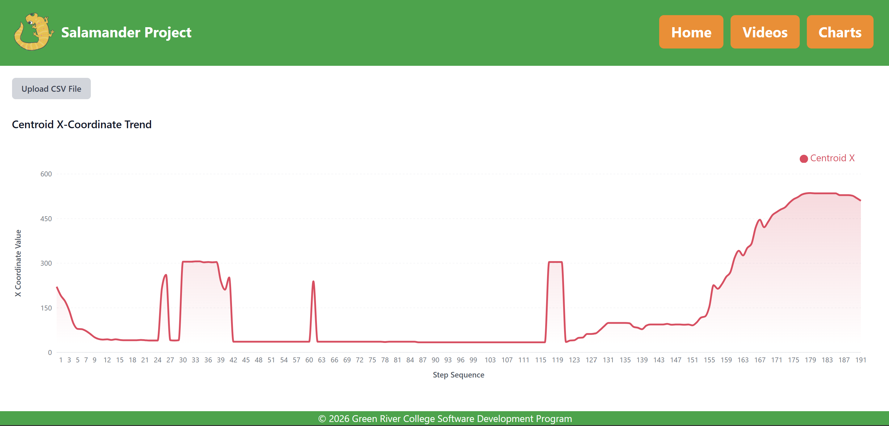

Software Engineer
LeoRagual
Software Development @ Green River College.
Experience
Lead Full-Stack Developer
Green River Devs
Auburn, WA
Jun 2026 - Present
- Managed and grew a team of over 5 interns, working closely and leveraging their talents.
- Lead architecture decisions for migration of applications, focusing on performance, reliability, and clean design.
- Uphold and establish development best practices, code reviews, issue resolution.
- Weekly sprint review with supervisor, showcasing completed tasks, current priorities, progress check.
- Deployed sites on Google Cloud Platform, set up CI/CD pipeline.
- Develop and maintained 3 different legacy web-based systems using HTML, CSS, PHP, MySQL, and other technologies to improve user experience and functionality.
- Further improved the websites by providing resources for faculty and advisors to develop program plans, organize appointments.
- Completed a shipped several new features to websites used by 80+ students in the Software Development program.
Software Engineer Intern
Costco IT
Issaquah, WA
Jun 2026 - Sep 2026
- Cut business-rule releases from 3 weeks to minutes by moving hard-coded Java rules into a visual DMN editor analysts change unassisted; the old cycle had let time-limited hotel discount listings expire unshipped.
- Put compiler and JUnit validation in front of every rule deploy, after an unvalidated rules bug had zeroed flight commissions for a month undetected (about $1M).
- Wired analyst edits to production across four repos: React editor → JGit commit → ADO pull request gated on tests → Artifactory JAR → service redeploy; wrote the acceptance tests.
- Enabled multi-user editing via a WebSocket session layer: pessimistic per-file locks, inactivity auto-release.
IT Support Assistant
Renton Technical College
Renton, WA
Aug 2024 - Jun 2025
- Coordinated and supported large-scale technical events (100+ attendees), collaborating with industry partners and ensuring reliable technical execution.
- Designed and delivered my own python workshops with hands on practice problems for over 20+ students in the Cybersecurity program.
- Installed, maintained, and researched various equipment (Televisions, cameras, wiring, etc.) for classrooms that are online and/or hybrid (both online and in-person).
Projects
Tigrina Kids Bible App

Functional Bible App in Tigrina. With chapter selection and image screen gallery with 400+ images to look through. Built with React Native.


Salamander Tracker
Built a Proof of Concept (POC) research application that tracks salamander movement for research lab. Built a Java and JavaCV video-processing pipeline for object detection and tracking, with React and Express components for managing and visualizing results.

Education
Green River College
BAS Software Development (Computer Science) · Sep 2025 - 2027
Data Structures (SDEV333), Algorithms (SDEV334), Full-Stack Web Dev(SDEV 355), Cloud Application Deployment (SDEV 372)
Renton Technical College
AAS Computer Science · Sep 2023 - 2025
Next.JS Development (CSI 246), Cross-Platform Development (CSI 248), Database Development (CSI 230)